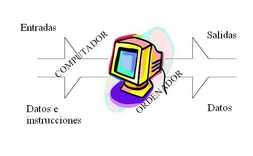

La informatica es el conjunto de conocimientos científicos y técnicas que hacen posible el tratamiento
automático de la información por medio de ordenadores.
La informática trata de la adquisición, representación, tratamiento y transmisión de la información.
El término información hace referencia aquí a la yuxtaposición de símbolos, con los que se representan
convencionalmente hechos, objetos o ideas.
Un computador, computadora u ordenador es una máquina (dispositivo electrónico) capaz de aceptar unos datos de entrada,
efectuar con ellos una serie de operaciones (lógicas y aritméticas), y proporcionar la información resultante (datos) a través
de un medio de salida; todo ello sin intervención de un operador humano y bajo el control de un programa de instrucciones
previamente almacenado en el propio computador.
